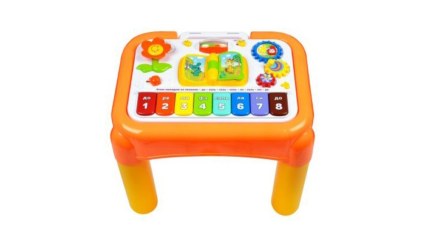

Интернет-магазин детских товаров
Игрушки
Игровой центр Жирафики

Игровой центр Жирафики Развивающий Мультистолик надолго увлечет малыша.
Описание товара
По мере взросления малыш будет открывать новые функции центра и совершенствовать различные умения и
навыки. На игровой панели столика ребенок найдет множество занимательных игр. Он сможет веселиться и
играть вместе с героями интерактивной книжки, выучит забавный танец с помощью веселой песенки и с
удовольствием будет крутить разноцветные шестеренки.
Клавиши интерактивного пианино откроют ребенку путь в волшебный мир музыки и научат его различать
основные цвета, а магнитная доска для рисования на обратной стороне игровой панели поможет ему проявить
свои художественные способности!
Сначала игровую панель столика можно крепить к детской кроватке, потом малыш сможет играть с ней сидя,
ну а когда он научится стоять, к панели можно будет просто приделать ножки.
Этот столик вы можете использовать еще и в качестве домашней песочницы для кинетического песка (песок в
комплект не входит).
Игрушка работает от 2-х батареек типа АА на 1,5 V (не входят в комплект).
Характеристики товара
-
Размер упаковки (м)
70.5x46.5x71.5
-
Страна изготовления
Китай
-
Материал
пластик
-
Вес в упаковке (кг)
0.5
-
Длина упаковки (см)
70
-
Ширина упаковки (см)
46
-
Высота упаковки (см)
71
-
Музыкальный
да
-
Сиденье
нет
{kind=link}